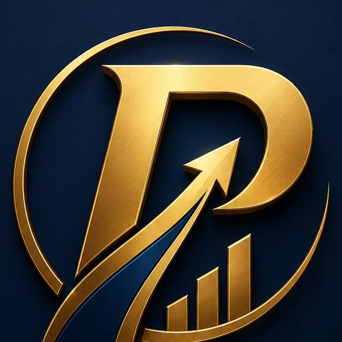

01
BUSINESS STRATEGY
วิเคราะห์ธุรกิจ วางกลยุทธ์ สร้างตำแหน่งทางการตลาด และกำหนดทิศทางที่ชัดเจน

PRIMEX PRO START A PROJECTบริการของเรา
วิเคราะห์ธุรกิจ วางกลยุทธ์ สร้างตำแหน่งทางการตลาด และกำหนดทิศทางที่ชัดเจน
สร้างอัตลักษณ์แบรนด์ที่แตกต่าง ตั้งแต่แนวคิด Logo, Visual Identity ไปจนถึงระบบแบรนด์ที่มีคุณค่า
ออกแบบเว็บไซต์ที่ไม่ได้มีเพียงความสวย แต่ช่วยสื่อสารคุณค่า สร้างความน่าเชื่อถือ และสนับสนุนการขาย
วางแผน Content และสร้างสื่อ ที่ทำให้แบรนด์สื่อสารอย่างต่อเนื่อง ชัดเจน และเป็นที่จดจำ
ผสาน AI เข้ากับงานออกแบบและ Content เพื่อเพิ่มความเร็ว ประสิทธิภาพ และสร้างโอกาสใหม่ให้ธุรกิจ
BUSINESS CREATIVE PARTNER
PRIMEX PRO เชื่อม Strategy, Brand Identity, Website, Content และ AI Creative เพื่อให้ธุรกิจสื่อสารได้ชัด ดูน่าเชื่อถือ และพร้อมเปลี่ยนการมองเห็นให้เป็นโอกาส
01 / POSITIONING
เราเริ่มต้นจากเป้าหมายทางธุรกิจ แล้วจึงออกแบบวิธีที่แบรนด์ควรปรากฏตัวต่อหน้าลูกค้า ตั้งแต่ข้อความ ภาพลักษณ์ เว็บไซต์ ไปจนถึงคอนเทนต์ที่ใช้จริง
คิดจากเป้าหมายก่อนออกแบบ
ภาพลักษณ์ที่สร้างความเชื่อมั่น
นำไปใช้ขายได้จริง
02 / SERVICES
Positioning, Value Proposition, Messaging และทิศทางของแบรนด์
Logo, Visual Identity, Graphic System, Presentation และสื่อแบรนด์
เว็บไซต์ที่ช่วยอธิบายธุรกิจ สร้างความน่าเชื่อถือ และนำลูกค้าไปสู่การติดต่อ
Content System, Short-form Video และ AI-assisted production
03 / PACKAGES
สำหรับธุรกิจที่ยังไม่มีตัวตนชัดเจน
สำหรับธุรกิจที่พร้อมสร้างภาพลักษณ์และช่องทางขาย
สำหรับธุรกิจที่ต้องการทีมเบื้องหลังต่อเนื่อง
04 / CASE STUDY
สร้างแนวคิดจาก “รากเหง้า + ครอบครัว + เกษตรปลอดภัย + เทคโนโลยี” สู่ภาพลักษณ์ Modern Heritage Agriculture ที่อบอุ่น น่าเชื่อถือ และต่อยอดเป็นคอนเทนต์และตลาดระยะยาวได้
ต้องการสร้างแบรนด์ในลักษณะนี้ →05 / FAQ
ได้ เราสามารถเริ่มจาก Brand Foundation เพื่อกำหนด Positioning และทิศทางก่อนสร้าง Logo หรือ Website
สามารถ Audit สิ่งที่มีอยู่ แล้วปรับ Brand System, Content Direction และ Website โดยไม่จำเป็นต้องรื้อทั้งหมด
ส่งข้อมูลธุรกิจ ปัญหาที่กำลังเจอ และสิ่งที่อยากให้เกิดขึ้นมาทาง LINE ได้เลย
LET'S BUILD SOMETHING VALUABLE
ส่งโจทย์มาให้ PRIMEX PRO ช่วยวิเคราะห์จุดเริ่มต้นก่อนตัดสินใจเลือกแพ็กเกจ